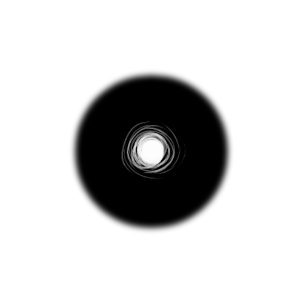

Imagine for just a moment, a world not unlike your own. Now, take it and turn the clock forward, and just keep going until everyting just dissolves away, little by little. Beyond humanity, beyond Earth, beyond everything. Eventually all that is left is a sea of endless chaos as far as the eye can see. It's not technically nothing, but it's difficult to say it is anything in particular either. Entropy. Keep going, and watch as even that dissolves away too. The mere idea of what is supposed to be, the idea of what being even is, dissolves away too. Physicality fades away, and a void is left behind. There is truly nothing left.
The physical may be gone, but something is still left behind. Something that refused to leave despite what your eyes may tell you. Ideas, memories, these things are much harder to get rid of. Even when everything is gone, and only a void remains, the world holds onto those memories, those ideas, those concepts. It is now that we are confronted with a thruth of this situation. Things cannot remain this way for all voids are ment to be filled.
Little by little, the world is made anew, not through atoms, chemistry, and physics, but through the universe's dying dream.